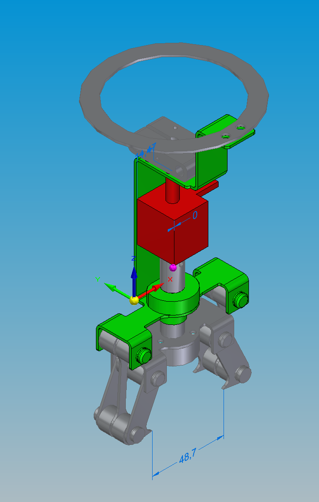
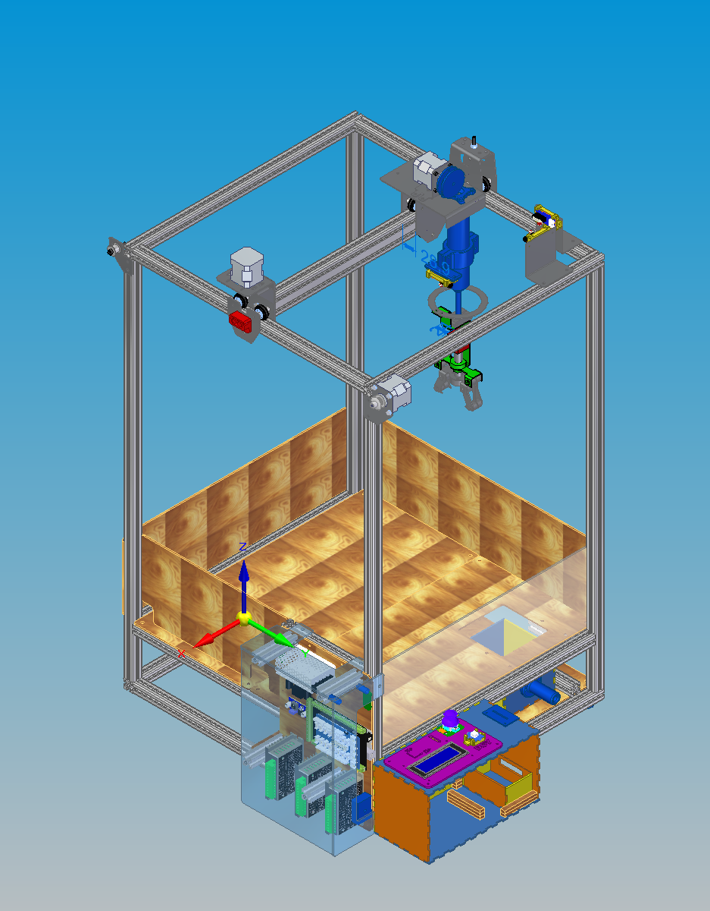

Conception, programmation, fabrication puis étude d'industrialisation d'une machine à pince de fête foraine : axes X / Y / Z motorisés, pince à électro-aimant, électronique Arduino et interface joueur.
La machine a été fabriquée et assemblée à l'atelier, puis testée en conditions de jeu.
Toute la chaîne de développement d'un produit, de l'idée à la machine qui fonctionne, jusqu'à sa production en série.
CAO complète sous Solid Edge : bâti, axes, pince, capteurs, intégration de l'électronique.
Code Arduino pilotant les moteurs, les capteurs, l'électro-aimant et l'interface joueur.
FAO, usinage, découpe laser, pliage, impression 3D, puis assemblage et tests.
Étude (fictive) de la production en série, jusqu'au calcul du prix de vente.
Au sein de l'équipe de quatre, je me suis chargé de trois parties du projet, de la conception jusqu'à la pièce réelle qui fonctionne.
J'ai écrit le programme qui pilote toute la machine sur l'Arduino Mega 2560 :
J'ai conçu entièrement le mécanisme de préhension :

J'ai préparé l'usinage des axes de la pince avec Solid Edge CAM Pro :
Le joueur pilote la pince au joystick pour attraper un lot dans le plateau de jeu et le déposer dans la trappe de sortie.

| Sous-ensemble | Description |
|---|---|
| Bâti | Profilés aluminium 20×20, plateau MDF, protections en plexiglas, tiroir de récupération |
| Axes X / Y | Moteurs NEMA 17, courroies GT2, chariots guidés par galets sur roulements |
| Axe Z | Treuil (moteur + poulie à rainure) sur supports en tôle pliée |
| Pince | 3 griffes actionnées par électro-aimant via un système bielle-griffe |
| Canne télescopique | Guide la pince verticalement et l'empêche de tourner |
| Capteurs | Micro-switchs de fin de course pour la prise d'origine |
| Électronique | Arduino Mega 2560, shield Grove, drivers micro-pas, relais, alimentation |
| Interface | Joystick, bouton et écran LCD 4 lignes I²C dans un boîtier à créneaux |
Étude complète de la production en série de la machine dans une usine ayant la surface et le parc machines de l'atelier FIMI de l'INSA Lyon.
| Étape | Contenu |
|---|---|
| Statut | Choix d'une SAS : responsabilité limitée, statuts flexibles, entrée d'investisseurs facilitée |
| Nomenclature | Produit découpé en modules codifiés, avec machine utilisée et temps de fabrication chronométré pour chaque pièce |
| Atelier | Calcul du nombre de machines nécessaires, achat et revente de machines-outils, implantation en job-shop |
| Personnel | Salaires selon la Convention collective de la métallurgie, charges patronales incluses |
| Coûts | Matières premières, énergie, eau, amortissement sur 10 ans et maintenance |
| Services et normes | RH externalisée, restauration, ménage, hygiène et sécurité, durée du travail |
| Certifications | RC pro, vérifications électriques Q18 / Q19, sécurité incendie Q4 |
| Notice | Notice d'assemblage visuelle, 100 % numérique via QR code |
| Fiscalité | Impôt sur les sociétés, CFE, TVA |
Les outils et le matériel utilisés sur le projet.